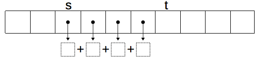
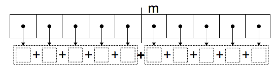
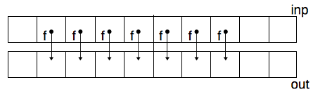
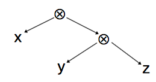
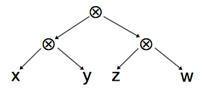
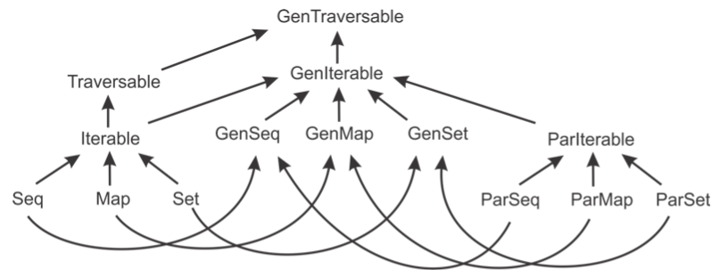
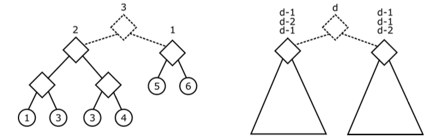
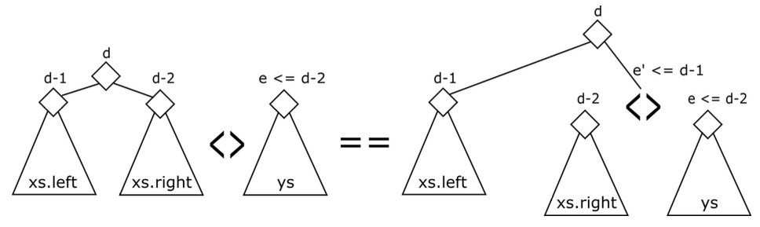
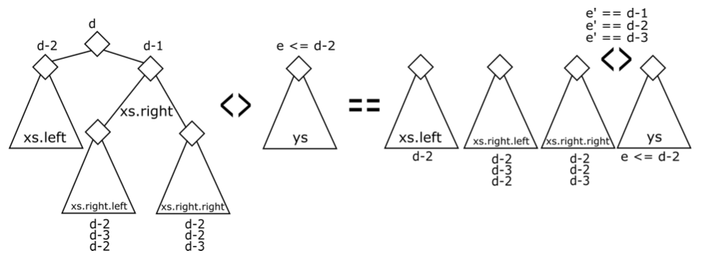

Parallelprogrammierung in Scala
Parallelprogrammierung
Einführung
Darstellungen lehnen sich an KuncakProkopec2015 an.
Threads wie in Java
class HelloThread extends Thread { override def run() { println("Hello") println("world!") } } def main() { val t = new HelloThread() val s = new HelloThread() t.start() s.start() t.join() s.join() }
Synchronized blocks
private val x = new AnyRef {} private var uidCount = 0L def getUniqueId(): Long = x.synchronized { uidCount = uidCount + 1 uidCount }
Basic parallel construct
Um zwei Ausdrücke, e1 and e2, parallel zu berechnen und das
Ergebnispaar zurückzugeben:
parallel(e1, e2)
Beispiel: Berechnung der P-Norm
- Gegeben sei ein Vektor als Array von ganzen Zahlen.
- Die P-Norm ist die Veralgemeinerung des Begriffs der Länge eines Vektors aus der Geometrie.
- Die 2-Norm eines zweidimensionalen Vektors \((a_1, a_2)\) ist \((a_1^2 + a_2^2)^{1/2}\).
- Die Verallgemeinerung: Die P-Norm eines Vektors \((a_1, \ldots\ , a_n)\) ist \[(\sum_{i-1}^n |a_i|^p)^{1/p}\]
Sequentielle Lösung
- Eine etwas verallgemeinerte Funktion
sumSegmentsoll folgendes Problem lösen. Gegeben sind- ein Integer-Array
a, das den Vektor repräsentiert - eine positive Double-Zahl
p - zwei gültige Array-Indizes
sundtaufamit \(s \leq t\)
- ein Integer-Array
- Berechne \[(\sum_{i-s}^{t-1}\lfloor|a_i|\rfloor^p)^{1/p}\] mit \(\lfloor x\rfloor\) ist die größte ganze Zahl kleiner oder gleich \(x\).

def sumSegment(a: Array[Int], p: Double, s: Int, t: Int): Int = { var i= s; var sum: Int = 0 while (i < t) { sum= sum + power(a(i), p) i= i + 1 } sum }
power berechnet \(\lfloor |x^p|\rfloor\)
def power(x: Int, p: Double): Int = math.exp(p * math.log(abs(x))).toInt
Berechnung der P-Norm mithilfe von
sumSegment(a, p, s, t)\[||a||_p := (\sum_{i=0}^{N-1}\lfloor|a_i|\rfloor^p)^{1/p}\] mitN = a.length.def pNorm(a: Array[Int], p: Double): Int = power(sumSegment(a, p, 0, a.length), 1/p)
Parallelisierung
Aufspaltung der Summe in zwei Teilsummen \[||a||_p := (\sum_{i=0}^{N-1}\lfloor|a_i|\rfloor^p)^{1/p}=(\sum_{i=0}^{m-1}\lfloor|a_i|\rfloor^p + \sum_{i=m}^{N-1}\lfloor|a_i|\rfloor^p)^{1/p}\]

Zwei Aufrufe von
sumSegmentparallel:def pNormTwoPart(a: Array[Int], p: Double): Int = { val m = a.length / 2 val (sum1, sum2) = parallel(sumSegment(a, p, 0, m), sumSegment(a, p, m, a.length)) power(sum1 + sum2, 1/p) }
Vier Aufrufe parallel:
val m1 = a.length/4; val m2 = a.length/2; val m3 = 3*a.length/4 val ((sum1, sum2),(sum3,sum4)) = parallel(parallel(sumSegment(a, p, 0, m1), sumSegment(a, p, m1, m2)), parallel(sumSegment(a, p, m2, m3), sumSegment(a, p, m3, a.length)))
Rekursive Zerlegung
def pNormRec(a: Array[Int], p: Double): Int = power(segmentRec(a, p, 0, a.length), 1/p) // wie sumSegment nur parallel/rekursiv def segmentRec(a: Array[Int], p: Double, s: Int, t: Int) = { if (t - s < threshold) sumSegment(a, p, s, t) // kleines Segment: mach es sequentiell else { val m = s + (t - s)/2 val (sum1, sum2) = parallel(segmentRec(a, p, s, m), segmentRec(a, p, m, t)) sum1 + sum2 } }
Kontrollstruktur parallel
parallelist ein Schlüsselwort in Scala.parallelkönnte auch als Funktion mit folgender Signatur implementiert werden:def parallel [A, B](taskA: => A, taskB: => B): (A, B) = { ... }
Systemunterstützung
- Effiziente Parallelität erfordert Unterstützung durch
- die Sprache und ihre Bibliotheken
- die virtuelle Maschine
- das Betriebssystem
- die Hardware
- Gängige Implementierung von
parallelnutzt JVM-Threads. - Von Parallelarbeit kann man nur dann eine wesentliche Geschwindigkeitssteigerung erwarten, wenn die parallel auszuführenden Schritte nicht zu trivial sind.
First-Class Tasks
Flexiblere Alternative für parallele Berechnungen
Statt
val (v1, v2) = parallel(e1, e2)
kann man auch das
task-Konstrukt benutzen:val t1 = task(e1) val t2 = task(e2) val v1 = t1.join val v2 = t2.join
Der Ausdruck
t = task(e)startet die Berechnung als Thread:tist einetask, die den Wert voneberechnet.- Die laufende Berechnung wird parallel zu
tfortgesetzt. - Um das Resultat von
ezu erhalten, benutzt mant.join. t.joinsorgt dafür, dass der ausführende Thread auf die Beendigung vontwartet.
Task-Interface
def task(c: => A) : Task[A] trait Task[A] { def join: A }
taskundjoinerzeugen Abbildungen zwischen Berechnungen und Tasks.- Die Gleichung
task(e).join == egilt immer. Auf die Verwendung von
.joinkann verzichtet werden, wenn man eine implizite Umwandlung definiert:implicit def getJoin[T](x:Task[T]): T = x.join
Anwendungsbeispiel für vier Tasks
Statt
val ((part1, part2),(part3,part4)) = parallel(parallel(sumSegment(a, p, 0, mid1), sumSegment(a, p, mid1, mid2)), parallel(sumSegment(a, p, mid2, mid3), sumSegment(a, p, mid3, a.length))) power(part1 + part2 + part3 + part4, 1/p)
kann man nun auch Tasks benutzen:
val t1 = task {sumSegment(a, p, 0, mid1)} val t2 = task {sumSegment(a, p, mid1, mid2)} val t3 = task {sumSegment(a, p, mid2, mid3)} val t4 = task {sumSegment(a, p, mid3, a.length)} power(t1 + t2 + t3 + t4, 1/p)
ScalaMeter
Wie schnell sind parallele Programme
- Bewertung von Programmen/Algorithmen durch asymptotische Analyse
- anwendbar auf rekursive Programme und damit auch auf rekursive
Parallelität (vgl. die
segmentRec-Funktion für die Berechnung der P-Norm)
- anwendbar auf rekursive Programme und damit auch auf rekursive
Parallelität (vgl. die
- Zeitmessungen durchführen
- Beispiele bereits betrachtet
- Frage: Warum sind Zeitmessungen schwierig?
- Amdahls Law
Was ist Benchmarking?
- Testen soll zeigen, dass für konkrete Anwendungsfälle das Programm das erwartete Ergebnis liefert.
- Benchmarking berechnet Performanz–Maße für Teile eines Programms.
- Warum ist Benchmarking für parallele Programme besonders interessant?
Laufzeitfaktoren
- Prozessorgeschwindigkeit
- Anzahl der Prozessoren
- Speicherzugriffszeit und Datenrate
- Verhalten der Cache-Speicher
- Laufzeitsystem
- Garbage-Collection
- Just-in-time-Übersetzung
- Thread-Scheduling
- Ergänzende Information: Drepper2007
Mess-Methodik
- Einfache Laufzeitmessungen liefern zufällige Ergebnisse.
- Maßnahmen:
- mehrfache Wiederholung
- stastische Methoden anwenden: Durchschnitt, Varianz, Elimination von Ausreißern
- Sicherstellen eines „stabilen“ Systemzustands (Warm-up-Phase)
- Sonderverhalten ausschließen (Garbage-Collection, Just-in-time-Übersetzung, Spezialoptimierungen)
- Ergänzende Information: Georges2007
Benchmarking mit ScalaMeter
- Framework für
- Performanz-Regressionstest – Vergleich der Performanz eines Programmlaufs mit den Ergebnissen vorheriger Läufe
- Benchmarking – Messen der Performance eines Programms bzw. eines bestimmten Teils davon
Benutzung
import org.scalameter._ val time = measure { (0 until 1000000).toArray } println(s”Array initialization time: $time ms”)
Einige Messergebnisse:
scala> import org.scalameter._ import org.scalameter._ scala> measure {(0 until 1000000).toArray} res16: org.scalameter.Quantity[Double] = 112.550853 ms scala> measure {(0 until 1000000).toArray} res17: org.scalameter.Quantity[Double] = 129.276758 ms scala> measure {(0 until 1000000).toArray} res18: org.scalameter.Quantity[Double] = 114.564872 ms scala> measure {(0 until 1000000).toArray} res19: org.scalameter.Quantity[Double] = 76.054651 ms scala> measure {(0 until 1000000).toArray} res20: org.scalameter.Quantity[Double] = 44.536571 ms scala> measure {(0 until 1000000).toArray} res21: org.scalameter.Quantity[Double] = 42.655136 ms scala> measure {(0 until 1000000).toArray} res22: org.scalameter.Quantity[Double] = 41.384557 ms scala> measure {(0 until 1000000).toArray} res23: org.scalameter.Quantity[Double] = 40.751557 ms scala> measure {(0 until 1000000).toArray} res24: org.scalameter.Quantity[Double] = 62.932047 ms scala> measure {(0 until 1000000).toArray} res25: org.scalameter.Quantity[Double] = 48.995 ms scala> measure {(0 until 1000000).toArray} res26: org.scalameter.Quantity[Double] = 54.067021 ms
JVM Warmup
- Sehr unterschiedliche Messergebnisse bei aufeinanderfolgenden Programmläufen
- Ein Programm, das auf der JVM läuft, durchläuft eine Aufwärmperiode,
nach deren Ablauf es seine maximale Geschwindigkeit erreicht.
- Das Programm (der Bytecode) wird interpretiert.
- Teile des Programms werden in Maschinencode übersetzt.
- Die JVM wird eventuell weitere dynamische Optimierungen vornehmen.
- Das Programm erreicht einen stabilen Zustand.
- Normalerweise will man die Geschwindigkeit nach Ablauf der Aufwärmperiode messen.
ScalaMeter
Warmer-Objekte lassen den zu messenden Code laufen, bis ein stabiler Zustand erreicht ist:val time = withWarmer(new Warmer.Default) measure { (0 until 1000000).toArray }
- Einige Messergebnisse:
scala> withWarmer(new Warmer.Default) measure {(0 until 1000000).toArray} res27: org.scalameter.Quantity[Double] = 91.896549 ms scala> withWarmer(new Warmer.Default) measure {(0 until 1000000).toArray} res28: org.scalameter.Quantity[Double] = 36.076516 ms scala> withWarmer(new Warmer.Default) measure {(0 until 1000000).toArray} res29: org.scalameter.Quantity[Double] = 41.084076 ms scala> withWarmer(new Warmer.Default) measure {(0 until 1000000).toArray} res30: org.scalameter.Quantity[Double] = 37.660086 ms scala> withWarmer(new Warmer.Default) measure {(0 until 1000000).toArray} res31: org.scalameter.Quantity[Double] = 41.897866 ms scala> withWarmer(new Warmer.Default) measure {(0 until 1000000).toArray} res32: org.scalameter.Quantity[Double] = 51.400989 ms
ScalaMeter Configuration
val time = config( Key.exec.minWarmupRuns -> 20, Key.exec.maxWarmupRuns -> 60, Key.verbose -> true ) withWarmer(new Warmer.Default) measure { (0 until 1000000).toArray }
Benutzung:
scala> val time = config( | Key.exec.minWarmupRuns -> 20, | Key.exec.maxWarmupRuns -> 60, | Key.verbose -> true | ) withWarmer(new Warmer.Default) measure { | (0 until 1000000).toArray | } Starting warmup. 0. warmup run running time: 79.517448 (covNoGC: NaN, covGC: NaN) 1. warmup run running time: 134.792116 (covNoGC: 0,3648, covGC: 0,3648) 2. warmup run running time: 112.503768 (covNoGC: 0,2553, covGC: 0,2553) 3. warmup run running time: 84.27628 (covNoGC: 0,2514, covGC: 0,2514) 4. warmup run running time: 95.29925 (covNoGC: 0,2234, covGC: 0,2234) GC detected. 5. warmup run running time: 194.387408 (covNoGC: 0,2234, covGC: 0,3687) 6. warmup run running time: 102.420648 (covNoGC: 0,1995, covGC: 0,3459) 7. warmup run running time: 97.337027 (covNoGC: 0,1838, covGC: 0,3309) 8. warmup run running time: 93.12814 (covNoGC: 0,1740, covGC: 0,3210) 9. warmup run running time: 81.202894 (covNoGC: 0,1780, covGC: 0,3225) 10. warmup run running time: 83.395876 (covNoGC: 0,1768, covGC: 0,3199) 11. warmup run running time: 83.710833 (covNoGC: 0,1745, covGC: 0,3161) 12. warmup run running time: 93.719995 (covNoGC: 0,1666, covGC: 0,3060) 13. warmup run running time: 79.129419 (covNoGC: 0,1684, covGC: 0,3053) 14. warmup run running time: 49.723492 (covNoGC: 0,2120, covGC: 0,3334) 15. warmup run running time: 43.142197 (covNoGC: 0,2540, covGC: 0,3637) 16. warmup run running time: 43.33126 (covNoGC: 0,2849, covGC: 0,3881) 17. warmup run running time: 44.380355 (covNoGC: 0,3078, covGC: 0,4071) 18. warmup run running time: 42.96821 (covNoGC: 0,3279, covGC: 0,4244) 19. warmup run running time: 37.649185 (covNoGC: 0,3509, covGC: 0,4444) GC detected. 20. warmup run running time: 55.993767 (covNoGC: 0,3509, covGC: 0,4569) 21. warmup run running time: 41.373658 (covNoGC: 0,3659, covGC: 0,4711) 22. warmup run running time: 42.396609 (covNoGC: 0,3883, covGC: 0,4916) 23. warmup run running time: 42.881321 (covNoGC: 0,3712, covGC: 0,5137) 24. warmup run running time: 45.010063 (covNoGC: 0,3671, covGC: 0,5331) 25. warmup run running time: 42.99345 (covNoGC: 0,3812, covGC: 0,3761) 26. warmup run running time: 44.65123 (covNoGC: 0,3843, covGC: 0,3656) 27. warmup run running time: 45.08368 (covNoGC: 0,3728, covGC: 0,3520) 28. warmup run running time: 44.773776 (covNoGC: 0,3587, covGC: 0,3349) 29. warmup run running time: 39.385705 (covNoGC: 0,3457, covGC: 0,3318) 30. warmup run running time: 43.370046 (covNoGC: 0,3375, covGC: 0,3144) 31. warmup run running time: 40.737444 (covNoGC: 0,3208, covGC: 0,2872) 32. warmup run running time: 43.941155 (covNoGC: 0,2888, covGC: 0,1912) 33. warmup run running time: 38.465119 (covNoGC: 0,1901, covGC: 0,0902) Steady-state detected. Ending warmup. measurements: 45.413679 ms time: org.scalameter.Quantity[Double] = 45.413679 ms
Weitere Messungen
Measurer.Default- reine Laufzeit
IgnoringGC- Laufzeit ohne Pausen durch GC
OutlierElimination- entfernt statische Ausreißer
MemoryFootprint- Speicherabdruck eines Objekts
GarbageCollectionCycles- Gesamtzahl aller GC-Pausen
- …
Beispiel
scala> withMeasurer(new Measurer.MemoryFootprint) measure { (0 until 1000000).toArray} res42: org.scalameter.Quantity[Double] = 146.72 kB scala> withMeasurer(new Measurer.MemoryFootprint) measure { (0 until 1000000).toArray} res43: org.scalameter.Quantity[Double] = 3993.488 kB scala> withMeasurer(new Measurer.MemoryFootprint) measure { (0 until 1000000).toArray} res44: org.scalameter.Quantity[Double] = 3999.064 kB scala> withMeasurer(new Measurer.MemoryFootprint) measure { (0 until 1000000).toArray} res45: org.scalameter.Quantity[Double] = 3995.936 kB
Anwendungsbeispiele
Paralleles Mapping
Parallelität und Collections
- Parallelverarbeitung von Collections ist wichtig!
- gehört zu den wichtigsten Anwendungen der Parallelarbeit
- Unter welchen Bedingungen ist Parallelarbeit möglich?
- Eigenschaften von Collections: Zerlegung, Verknüpfung
- Eigenschaften von Operationen: Assoziativität, Unabhängigkeit
Funktionale Programmierung und Collections
- Operationen auf Collections sind in der funktionalen Programmierung von besonderem Gewicht.
wende eine Funktion auf jedes Element an
List(1,3,8).map(x => x*x) == List(1, 9, 64)
verknüpfe die Elemente mit einer gegebenen Operation
List(1,3,8).fold(100)((s,x) => s + x) == 112
verknüpfe die „folds" aller Listen-Präfixe
List(1,3,8).scan(100)((s,x) => s + x) == List(100, 101, 104, 112)
Diese Operationen sind für parallelle Collections noch wichtiger als für sequentielle.
Wahl der Datenstrukturen
- Die Collection
Listwird benutzt, um das Resultat von Operationen zu spezifizieren. Grundsätzlich sind Lists aber für parallele Implementierungen ungeeignet weil
- sie in zwei Teile zu zerlegen und
- die Elemente miteinander zu verknüpfen
jeweils linearen Zeitaufwand erfordert.
- Stattdessen werden folgende Alternativen betrachtet
- Arrays
- als imperative Datenstruktur
- Bäume
- als funktionale Datenstruktur
Darüber hinaus verfügt Scala über Bibliotheken mit sehr effizient implementierten parallelen Collections.
Bedeutung von map
map wendet die als Argument übergebene Funktion auf jedes
Listenelement an:
List(1,3,8).map(x => x*x) == List(1, 9, 64) List(a1, a2, ..., an).map(f) == List(f(a1), f(a2), ..., f(an))
Weiter gilt:
list.map(x => x) == listlist.map(f.compose(g)) == list.map(g).map(f)
mit(f.compose(g))(x) = f(g(x))
Sequentielle Implementierung für Listen
def mapSeq[A,B](lst: List[A], f : A => B): List[B] = lst match { case Nil => Nil case h :: t => f(h) :: mapSeq(t,f) }
Gesucht ist eine Version, die folgendes parallelisiert:
- die Berechnung von
f(h)für verschiedene Elementeh - den wahlfreien Zugriff auf die Elemente (Listen sind hier ungeeignet)
Sequentielle Version von map für Bäume
def mapASegSeq[A,B](inp: Array[A], left: Int, right: Int, f : A => B, out: Array[B]) = { // Writes to out(i) for left <= i <= right-1 var i= left while (i < right) { out(i)= f(inp(i)) i= i+1 }} val in= Array(2,3,4,5,6) val out= Array(0,0,0,0,0) val f= (x:Int) => x*x mapASegSeq(in, 1, 3, f, out) out res1: Array[Int] = Array(0, 9, 16, 0, 0)

Parallele Version von map für arrays
def mapASegPar[A,B](inp: Array[A], left: Int, right: Int, f : A => B, out: Array[B]): Unit = { // Writes to out(i) for left <= i <= right-1 if (right - left < threshold) mapASegSeq(inp, left, right, f, out) else { val mid = left + (right - left)/2 parallel(mapASegPar(inp, left, mid, f, out), mapASegPar(inp, mid, right, f, out)) } }
Anmerkungen:
- Schreibzugriffe nur für auf verschiedene Array-Elemente zulässig.
- Der Wert von
thresholddarf nicht zu klein gewählt werden.
Benutzungsbeispiel
Erhebe jedes Array-Element zur p-ten Potenz:
\[Array(a_1, a_2, \ldots , a_n) \rightarrow Array(|a_1|^p, |a_2|^p, \ldots , |a_n|^p)\]
val p: Double = 1.5 def f(x: Int): Double = power(x, p) mapASegSeq(inp, 0, inp.length, f, out) // sequential mapASegPar(inp, 0, inp.length, f, out) // parallel
Zwei Fragen:
- Gibt es Geschwindigkeitsgewinne durch die parallele Ausführung?
- Könnte es Geschwindigkeitsgewinne geben, falls man auf die oben eingeführten =map=Varianten verzichtet?
„Herkömmliche“ sequentielle Version des Algorithmus
def normsOf(inp: Array[Int], p: Double, left: Int, right: Int, out: Array[Double]): Unit = { var i= left while (i < right) { out(i)= power(inp(i),p) i= i+1 } }
„Herkömmliche“ parallele Version des Algorithmus
def normsOfPar(inp: Array[Int], p: Double, left: Int, right: Int, out: Array[Double]): Unit = { if (right - left < threshold) { var i= left while (i < right) { out(i)= power(inp(i),p) i= i+1 } } else { val mid = left + (right - left)/2 parallel(normsOfPar(inp, p, left, mid, out), normsOfPar(inp, p, mid, right, out)) } }
Messungen mit ScalaMeter
inp.length = 2000000threshold = 10000Intel(R) Core(TM) i7-3770K CPU @ 3.50GHz (4-core, 8 HW threads), 16GB RAM
Ausdruck Zeit(ms) mapASegSeq(inp, 0, inp.length, f, out) 174.17 mapASegPar(inp, 0, inp.length, f, out) 28.93 normsOfSeq(inp, p, 0, inp.length, out) 166.84 normsOfPar(inp, p, 0, inp.length, out) 28.17 - Die Parallelisierung zahlt sich aus.
- Die Vermeidung von Funktionen höherer Ordnung zahlt sich nicht aus.
Parallele Version von map für Bäume
Baumstruktur
- Blätter Speichern Array-Segmente
Innere Knoten speichern zwei Unterbäume
sealed abstract class Tree[A] { val size: Int } case class Leaf[A](a: Array[A]) extends Tree[A] { override val size = a.size } case class Node[A](l: Tree[A], r: Tree[A]) extends Tree[A] { override val size = l.size + r.size }
- Unter der Voraussetzung, dass die Bäume balanciert sind, können die Zweige parallel betrachtet werden.
Implementierung
def mapTreePar[A:Manifest,B:Manifest](t: Tree[A], f: A => B) : Tree[B] = t match { case Leaf(a) => { val len = a.length; val b = new Array[B](len) var i= 0 while (i < len) { b(i)= f(a(i)); i= i + 1 } Leaf(b) } case Node(l,r) => { val (lb,rb) = parallel(mapTreePar(l,f), mapTreePar(r,f)) Node(lb, rb) } }
Performanz ist mit der Array-Variante vergleichbar.
Vergleich der Array- mit der Baum-Variante
- Arrays
- (
+) Wahlfreier Zugriff auf die Element, geteilter Zugriff ist möglich - (
+) gute - (
-) imperativ: Race-Conditions müssen vermieden werden - (
-) Verkettung kann aufwändig sein
- (
- Bäume (nicht änderbare)
- (
+) rein funktional, erzeugen neue Bäume, alte bleiben erhalten - (
+) keine Synchronisation erforderlich - (
+) Verkettung zweier Bäume sehr effizient - (
-) Speicherverwaltung aufwändig - (
-) schlechte Lokalität des Speicherzugriffs
- (
Faltungsoperationen
Bisher betrachtet:
map: wende eine Funktion auf jedes Element einer Collection an
List(1,3,8).map(x => x*x) == List(1, 9, 64)
Jetzt betrachten wir:
fold: verknüpfe die Elemente mit einer gegebenen Funktion
List(1,3,8).fold(100)((s,x) => s + x) == 112
Varianten
fold akzeptiert neben anderen eine binäre Verknüpfungsoperation als
Argument. Dabei tun sich verschiedene Varianten auf:
- sie erwarten ein Startelement oder gehen von nicht leeren Listen aus
- in welcher Reihenfolge wird die Verknüpfungsoperation auf die Elemente angewendet
List(1,3,8).foldLeft(100)((s,x) => s - x) == ((100 - 1) - 3) - 8 == 88 List(1,3,8).foldRight(100)((s,x) => s - x) == 1 - (3 - (8-100)) == -94 List(1,3,8).reduceLeft((s,x) => s - x) == (1 - 3) - 8 == -10 List(1,3,8).reduceRight((s,x) => s - x) == 1 - (3 - 8) == 6
Für die Parallelisierung braucht man assoziative Operationen
- z. B. Addition, Zeichenkettenverkettung (aber keine Subtraktion)
Assoziativität
- Eine Operation \(f: (A,A) \rightarrow A\) ist assoziativ genau dann, wenn für alle \(x, y, z\) gilt: \[f(x, f(y, z)) = f(f(x, y), z)\]
- Schreibt man \(f(a, b)\) in Infix-Notation als \(a \otimes b\), wird aus der Assoziativitätsregel: \[x\otimes(y\otimes z) = (x\otimes y)\otimes z\]
- Konsequenz: Klammersetzung spielt keine Rolle, z. B, liefern diese Ausdrücke immer das gleiche Resultat: \[(x\otimes y)\otimes (z\otimes w) = (x\otimes (y\otimes z))\otimes w = ((x\otimes y)\otimes z)\otimes w\]
Ausdrücke als Bäume
- Blätter sind die Werte
- Knoten sind die Operationen
- \(x\otimes(y\otimes z)\)
- 
- \((x\otimes y)\otimes (z\otimes w)\)
- 
Falten (Reduzieren) von Bäumen
Wie wird der Wert eines Ausdrucksbaums berechnet?
sealed abstract class Tree[A] case class Leaf[A](value: A) extends Tree[A] case class Node[A](left: Tree[A], right: Tree[A]) extends Tree[A]
- Das Resultat der Auswertung eines Ausdrucks entsteht durch Anwendung
einer Funktio
reduceauf den Baum.
Sequentielle Definition:
def reduce[A](t: Tree[A], f : (A,A) => A): A = t match { case Leaf(v) => v case Node(l, r) => f(reduce[A](l, f), reduce[A](r, f)) // Node -> f }
- Die Faltung (Reduzierung) eines Knotens (
Node) kann als Ersetzung desNode-Konstruktors durch die Argumentfunktionfangesehen werden. - Anwendung von
reduceFür nicht-assoziative Operationen hängt das Resultat von der Struktur des Baumes ab:
def tree = Node(Leaf(1), Node(Leaf(3), Leaf(8))) def fMinus = (x:Int,y:Int) => x - y def res = reduce[Int](tree, fMinus)
- Resultat?
Parallele Definition
def reduce[A](t: Tree[A], f : (A,A) => A): A = t match { case Leaf(v) => v case Node(l, r) => { val (lV, rV) = parallel(reduce[A](l, f), reduce[A](r, f)) f(lV, rV) } }
Assoziativitätsbetrachtung
\[ $x\otimes(y\otimes z) = (x\otimes y)\otimes z\]
Mit Ersetzung von \(\otimes\) in Scala durch f kann die Gleichung wie
folgt geschrieben werden:
reduce(Node(Leaf(x), Node(Leaf(y), Leaf(z))), f) == reduce(Node(Node(Leaf(x), Leaf(y)), Leaf(z)), f)
Baumordnung repräsentiert durch Listen
Die Ordnung der Elemente in einem Baum kann durch Umwandlung in eine Liste wiedergegeben werden:
def toList[A](t: Tree[A]): List[A] = t match { case Leaf(v) => List(v) case Node(l, r) => toList[A](l) ++ toList[A](r) }
Wie kann unter Verwendung der folgenden
map-Funktion für Bäumedef map[A,B](t: Tree[A], f : A => B): Tree[B] = t match { case Leaf(v) => Leaf(f(v)) case Node(l, r) => Node(map[A,B](l, f), map[A,B](r, f)) }
die Funktion
toListunter Verwendung vonmapundreduceformuliert werden?- Antwort:
Konsequenz der Assoziativität für die Baumreduktion
- Betrachte zwei Ausdrücke mit derselben Liste von Operanden, verknüpft mit $⊗§ aber unterschiedlicher Klammerung: Diese Ausdrücke besitzen den gleichen Wert.
Formal:
Wennf: (A,A) => Aassoziativ ist,t1: Tree[A],t2: Tree[A]und wenntoList(t1)==toList(t2)dann gilt:
reduce(t1, f)==reduce(t2, f)
Ergänzung: Parallele Faltungsoperation für Arrays
def reduceSeg[A](inp: Array[A], left: Int, right: Int, f: (A,A) => A): A = { if (right - left < threshold) { var res= inp(left); var i= left+1 while (i < right) { res= f(res, inp(i)); i= i+1 } res } else { val mid = left + (right - left)/2 val (a1,a2) = parallel(reduceSeg(inp, left, mid, f), reduceSeg(inp, mid, right, f)) f(a1,a2) } } def reduce[A](inp: Array[A], f: (A,A) => A): A = reduceSeg(inp, 0, inp.length, f)
Datenparallelität
Bisher Task-Parallelität betrachtet:
Verteilung von Berechnungsprozessen auf Prozessoren
In Scala stehen hier die Konstrukte parallel und task zur
Verfügung.
Datenparallelität
Verteilung von Daten auf Prozessoren
Datenparalleles Programmiermodell
- Einfachste Form der datenparallelen Programmierung ist die parallele
for-Schleife.
- Beispiel Initialisierung von Array-elementen:
def initializeArray(xs: Array[Int])(v: Int): Unit = { for (i <- (0 until xs.length).par) { xs(i) = v } }
- Der Aufruf von
.parsorgt dafür, dass die Iterationen derfor-Schleife auf verschiedenen Prozessoren konkurrierend ablaufen. - Achtung: Die parallele
for-Schleife ist nicht funktional sondern arbeitet mit Seiteneffekten. - Der Programmierer ist dafür verantwortlich, dass innerhalb der Schleife nur unterschiedliche Speicherzellen beschrieben werden.
Parallele Collections
- Neben der parallelen
for-Schleife können auch sequentielle Collections in parallele verwandelt werden. Der Aufruf von
.parmacht aus dem sequentiellen Interval ein paralleles:(1 until 1000).par .filter(n => n % 3 == 0) .count(n => n.toString == n.toString.reverse)
- Nicht alle Operationen sind parallelisierbar.
Beispiel: Versuch, die Methode
summithilfe vonfoldLeftzu implementieren:def sum(xs: Array[Int]): Int = { xs.par.foldLeft(0)(_ + _) }
- Warum wird
sumnicht parallel ausgeführt?
Die Operation fold
fold-Operation führt intern eine Baumreduktion durch (s. o.).Implementierung der
sum-Methode:def sum(xs: Array[Int]): Int = { xs.par.fold(0)(_ + _) }
- Voraussetzung: Die Verknüpfungsoperation muss assoziativ sein.
Hierarchie der Scala Collection-Klassen
- Traversable[T]
- Collection mit Elementen vom Typ
Tmit Operationen, die mitforeachimplementiert sind - Iterable[T]
- Collection mit Elementen vom Typ
T=mit Operationen, die mit =iteratorimplementiert sind - Seq[T]
- geordnete Sequenz mit Elementen vom Typ
T - Set[T]
- eine Menge mit Elementen vom Typ
T(keine Duplikate) - Map[K, V]
- eine Map mit Schlüsseln vom Typ
Kund Werten vom TypV(Schlüssel sind eindeutig)
Parallele Collection-Hierarchie
- Traits
ParIterable[T],ParSeq[T],ParSet[T]undParMap[K, V]sind die parallelen Gegenstücke zu verschiednen sequentiellen Traits. Für Programmcode, der agnostisch gegenüber Parallelität sein soll, existiert eine separate Hierarchie von generischen Collection-Traits:
GenIterable[T],GenSeq[T],GenSet[T],GenMap[K, V]
Anwendungsbeispiel
Finde das größte Palindrom in einer Sequenz:
def largestPalindrome(xs: GenSeq[Int]): Int = { xs.aggregate(Int.MinValue)( (largest, n) => if (n > largest && n.toString == n.toString.reverse) n else largest, math.max ) } val array = (0 until 1000000).toArray // 2 gleichwertige Aufrufvarianten largestPalindrome(array) largestPalindrome(array.par)
Datenstrukturen für parallele Berechnungen
hier: interne Repräsentation von Listen durch Conc-Bäume
Ein Datentyp für Listen
… wie er für funktionale Programmiersprachen typisch ist:
sealed trait List[+T] { def head: T def tail: List[T] } case class ::[T](head: T, tail: List[T]) extends List[T] case object Nil extends List[Nothing] { def head = sys.error(”empty list”) def tail = sys.error(”empty list”) }
Filter-Methode
def filter[T](lst: List[T])(p: T => Boolean): List[T] = lst match { case x :: xs if p(x) => x :: filter(xs)(p) case x :: xs => filter(xs)(p) case Nil => Nil }
Ein Datentyp für Bäume
- Listen sind für sequentielle Berechnungen geeignet, sie werden von links nach rechts abgearbeitet.
- Bäume erlauben parallele Verarbeitung der Unterbäume.
sealed trait Tree[+T] case class Node[T](left: Tree[T], right: Tree[T]) extends Tree[T] case class Leaf[T](elem: T) extends Tree[T] case object Empty extends Tree[Nothing]
Filter-Methode
def filter[T](t: Tree[T])(p: T => Boolean): Tree[T] = t match { case Node(left, right) => Node(parallel(filter(left)(p), filter(right)(p))) case Leaf(elem) => if (p(elem)) t else Empty case Empty => Empty }
Bäume „entarten“ leicht zu Listen.

Der Datentyp Conc
Ein Datentyp für balancierte Bäume:
sealed trait Conc[+T] { def level: Int def size: Int def left: Conc[T] def right: Conc[T] }
In der parallelen Programmierung wird dieser Typ auch als conc-list bezeichnet (ursprünglich für die Programmiersprache Fortress entwickelt).
Konkrete Implementierung
case object Empty extends Conc[Nothing] { def level = 0 def size = 0 } class Single[T](val x: T) extends Conc[T] { def level = 0 def size = 1 } case class <>[T](left: Conc[T], right: Conc[T]) extends Conc[T] { val level = 1 + math.max(left.level, right.level) val size = left.size + right.size }
Invarianten für Conc-Bäume
- Ein
<>-Knoten kann niemalsEmptyals Umterbaum besitzen. - Die
level-Differenz zwischen linkem und rechten Unterbaum ist immer kleiner oder gleich 1.
Implementierungen müssen diese Invarianten beachten.
def <>(that: Conc[T]): Conc[T] = { if (this == Empty) that else if (that == Empty) this else concat(this, that) }
Implementierung von concat
Verschiedene Fälle sind zu betrachten.
- Fall 1
Die beiden zu verknüpfenden Bäume haben eine Höhendifferenz \(\leq 1\)

def concat[T](xs: Conc[T], ys: Conc[T]): Conc[T] = { val diff = ys.level - xs.level if (diff >= -1 && diff <= 1) new <>(xs, ys) else if (diff < -1) {
- Fall 2
- Der linke Baum ist höher als der rechte
- Unterfall 1
der linke Baum ist linkslastig …
 … dann „concateniere” rekursiv mit dem rechten Unterbaum
if (xs.left.level >= xs.right.level) { val nr = concat(xs.right, ys) new <>(xs.left, nr) } else {
- Unterfall2
der linke Baum ist rechtslastig …

} else { val nrr = concat(xs.right.right, ys) if (nrr.level == xs.level - 3) { val nl = xs.left val nr = new <>(xs.right.left, nrr) new <>(nl, nr) } else { val nl = new <>(xs.left, xs.right.left) val nr = nrr new <>(nl, nr) } }
Wichtig: Die Konkatenation ist von der Ordnung \(O(h_1 - h_2)\), wobei \(h_1\) und \(h_2\) die Höhen der beiden Bäume sind.